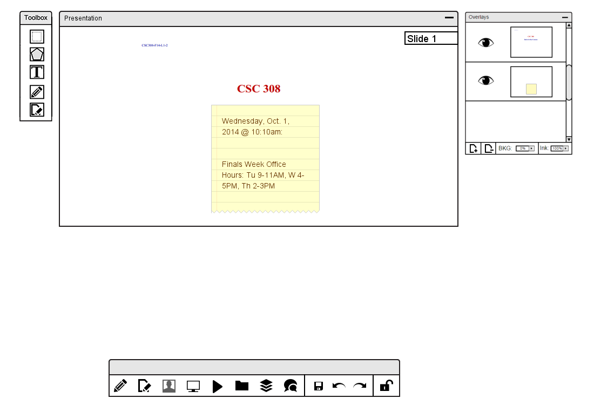
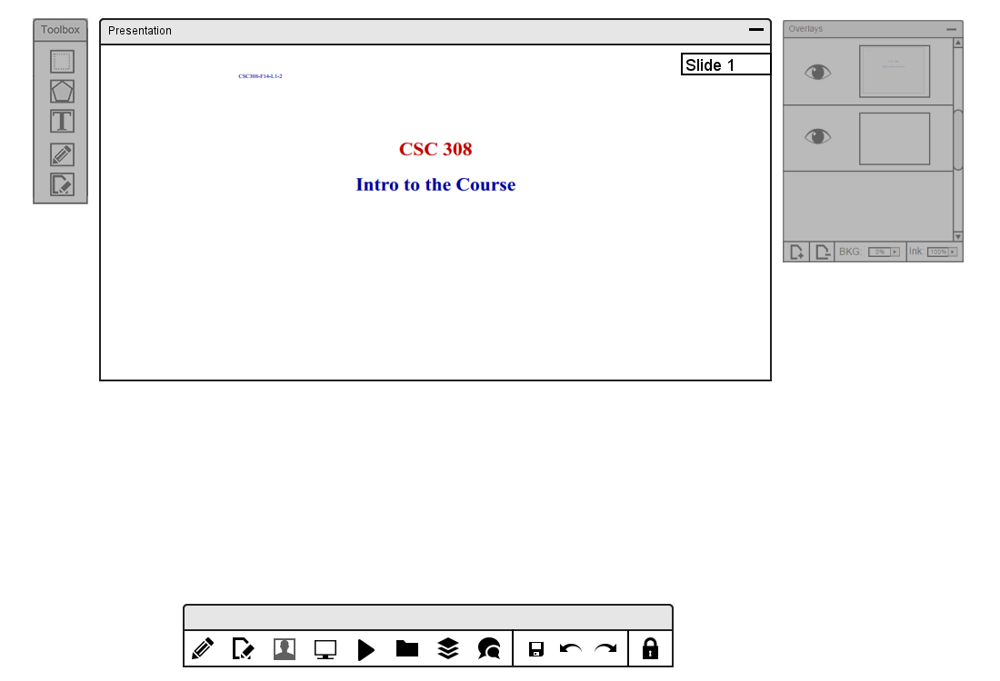

Many of the tools for a student taking notes during a lecture are directly correlated to how an instructor takes notes presenting a lecture, which are presented in section 2.3.3.
The main difference between the student's interface and the instructor's interface is the ability of a student to take notes on a slide, depending on which mode the instructor sets the class in.

Figure 4: Student taking notes in a lecture.
While the class is in free mode, the student can use drawing tools (explained in detail in section 2.5.) to whichever slide the student is taking notes on. When the instructor switches to lock mode, the student is on the targeted slide the instructor is presenting and drawing tools are disabled. Figure 5 shows the student's current interface while in lock mode with the layers manager and drawing tools windows now in grey.

Figure 5: Student's view in lock mode.